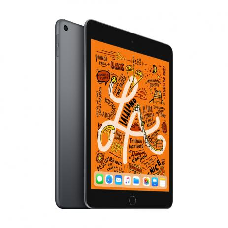

iPad Mini Wi-Fi - 64GB
O iPad mini sempre foi queridinho pelo seu tamanho e capacidade. Agora ele vem com tudo para ser ainda mais adorado: chip A12 Bionic com Neural Engine, tela Retina de 7,9 polegadas com True Tone e compatibilidade com o Apple Pencil para você anotar suas melhores ideias assim que elas surgirem. iPad mini. De mini, só tem o tamanho.
Valor: R$ 3.499,00
Processador: A12 Bionic com arquitetura de 64 bits Neural Engine Coprocessador M12 integrado
Sistema Operacional: IOS
Tamanho da Tela: 7.9"
Tecnologia: Wi-Fi
GPS: Sim
Funciona como celular: Não
Memória Flash: 64GB
Resolução da Câmera - Câmera Traseira: 8MP
Câmera Frontal: 7MP
Câmera Traseira: Sim
Câmera Frontal: Sim
Grava Vídeos: Sim